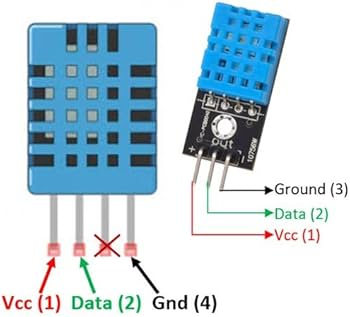

title: 🤖 IOT - Detalhes do Sensor DHT11 summary: Aprenda tudo sobre o sensor DHT11: funcionamento, montagem, uso com Arduino e aplicações em projetos IoT. authors: - Luis Rodrigo - Papagaio tags: - iot - DHT11, - Arduino - temperatura - umidade - sensores - automação residencial - monitoramento ambiental - Arduino IDE - prototipagem - eletrônica - projeto IoT - sensor digital - comunicação serial - Adafruit - microcontrolador - ESP8266 - ESP32 - IoT projetos - prototipagem eletrônica.
date: 2025-11-05 icon: material/home_iot_device lang: pt
Sensor DHT11 🧰¶
 Introdução¶
Introdução¶
O DHT11 é um sensor digital amplamente utilizado em projetos de IoT para medir temperatura e umidade do ar simultânea e precisamente. Este sensor inteligente combina dois componentes principais: um sensor capacitivo para medir umidade relativa e um termistor para medir temperatura, ambos processados por um microcontrolador integrado de 8 bits.
O DHT11 destaca-se pela sua versatilidade e facilidade de uso, sendo ideal para aplicações que exigem monitoramento ambiental básico sem custos elevados. Suas principais aplicações práticas incluem:
- Automação residencial inteligente para controle de climatização e conforto ambiental
- Agricultura de precisão monitorando umidade do solo e temperatura em estufas
- Monitoramento ambiental em data centers, laboratórios e salas de servidores
- Estações meteorológicas pessoais para coleta de dados climáticos
- Sistemas de incubação para aves e reptis, garantindo condições ideais de temperatura
- Detectores de qualidade do ar integrados com sensores adicionais para ambientes internos
Este sensor é especialmente apropriado para iniciantes e estudantes de IoT e Arduino, oferecendo uma curva de aprendizado suave com excelente retorno prático. Sua pinagem simples (apenas 3 pinos utilizados), comunicação digital direta e grande disponibilidade de bibliotecas prontas tornam a implementação rápida e eficiente.
🎯 Nível de Dificuldade: Iniciante
 Visão Geral e Especificações do Sensor¶
Visão Geral e Especificações do Sensor¶
2.1 O que é e Como Funciona¶
O DHT11 é um sensor digital de temperatura e umidade de baixo custo que utiliza um protocolo proprietário de comunicação serial para transmitir dados. Diferentemente de sensores analógicos que retornam valores contínuos de tensão, o DHT11 envia informações já digitalizadas e processadas diretamente ao microcontrolador.
🚨 Princípio de Funcionamento:
O sensor opera através de dois mecanismos distintos:
-
Medição de Umidade: Um sensor capacitivo com membrana porosa permite que a umidade do ar penetre e altere a capacitância interna. Essa variação é convertida em um sinal digital proporcional à umidade relativa do ambiente.
-
Medição de Temperatura: Um termistor de coeficiente negativo (NTC) detecta variações de temperatura e as converte em sinais digitais, fornecendo leituras em graus Celsius.
🚨 Protocolo de Comunicação:
O DHT11 utiliza um barramento serial de fio único (single-wire) que funciona de forma bidirecional:
- O Arduino envia um pulso negativo de pelo menos 18ms seguido de um pulso positivo de 20 a 40µs
- O sensor responde com um pulso baixo de 54µs seguido de um pulso alto de 80µs
- O sensor então transmite 40 bits de dados: 8 bits de umidade inteira + 8 bits de umidade decimal + 8 bits de temperatura inteira + 8 bits de temperatura decimal + 8 bits de checksum
- A transferência de dados ocorre aproximadamente a cada 2 segundos
Cada bit é codificado pela duração do pulso: bits "0" têm pulsos curtos (26-28µs) enquanto bits "1" têm pulsos mais longos (70µs).
🚨 Tipo de Saída: Dados digitais em protocolo proprietário (único fio de dados)
🚨 Vantagens Principais:
- Baixo custo e grande disponibilidade no mercado
- Duas medições em um único componente (temperatura e umidade)
- Fácil interfaceamento com microcontroladores através de bibliotecas prontas
- Confiável e calibrado em fábrica, sem necessidade de calibração externa
- Excelente para prototipagem rápida e educação
- Integração simples com projetos IoT básicos
🚨 Limitações Principais:
- Precisão limitada: ±2°C para temperatura e ±5% UR para umidade
- Faixa de operação restrita: Temperatura de 0°C a 50°C (não funciona abaixo de 0°C); umidade de 20% a 90%
- Lentidão de resposta: Tempo mínimo de 2 segundos entre leituras consecutivas
- Sensibilidade a interferências: Ruído elétrico em cabos longos pode causar leituras incorretas
- Degradação com o tempo: Exposição prolongada à umidade extrema pode afetar a precisão
- Instabilidade em ambientes frios: Desempenho inadequado abaixo de 0°C
2.2 Especificações Técnicas 🤖¶
| Parâmetro | Valor | Descrição |
|---|---|---|
| Tensão de Operação (VCC) | 3.0 a 5.5V DC | Compatível com Arduino (5V) e sistemas 3.3V (ESP32/ESP8266) |
| Corrente Típica | 200µA a 500mA (medição); 100-150µA (standby) | Consumo moderado, apropriado para alimentação via USB ou baterias |
| Corrente Máxima | 2.5mA | Limite de corrente pico durante medição |
| Faixa de Medição (Temperatura) | 0°C a 50°C | Não funciona em condições abaixo de 0°C |
| Faixa de Medição (Umidade) | 20% a 90% UR | Precisão limitada fora dessa faixa |
| Precisão (Temperatura) | ±2°C | Aceitável para aplicações genéricas; inadequado para ambientes críticos |
| Precisão (Umidade) | ±5% UR | Variação típica de calibração |
| Resolução (Temperatura) | 16 bits | Fornece valores em 0.1°C |
| Resolução (Umidade) | 16 bits | Fornece valores em 1% UR |
| Tipo de Saída | Digital (serial fio único) | Não analógica; requer biblioteca específica |
| Tempo de Resposta | ~2 segundos máximo | Intervalo mínimo entre leituras; muito lento para detecção rápida |
| Taxa de Amostragem | 1 Hz (1 leitura/segundo)* | Máximo de uma medição por segundo (*limitado pela velocidade interna) |
| Dimensões | 23mm × 12mm × 5mm | Compacto, facilita integração em projetos pequenos |
| Fabricante / Modelo | Aosong (Huamao) / DHT11 | Componente comercial amplamente distribuído |
🤖 Impacto dos Parâmetros na Compatibilidade com Arduino:
A tensão de operação de 3.0 a 5.5V oferece compatibilidade universal com boards Arduino convencionais (5V) e também com sistemas modernos de 3.3V como ESP32 e ESP8266.
O tempo de resposta de 2 segundos é suficiente para a maioria das aplicações IoT, mas inadequado para sistemas que exigem detecção rápida de mudanças.
A taxa de amostragem de 1 Hz implica que o código deve incluir delayss de pelo menos 1 a 2 segundos entre leituras consecutivas, caso contrário resultará em leituras inválidas ou repetidas.
A corrente moderada (≤2.5mA) permite alimentação direta via pino 5V do Arduino, embora seja recomendável usar uma fonte de alimentação externa para projetos com múltiplos sensores.
A saída digital requer obrigatoriamente uma biblioteca compatível (Adafruit DHT) para interpretar o protocolo proprietário.
2.3 Vantagens e Limitações 🎯¶
🎯 Vantagens:
- Custo extremamente competitivo: Entre os sensores de temperatura/umidade mais acessíveis do mercado, ideal para iniciantes e projetos com múltiplos sensores
- Fácil integração com Arduino: Bibliotecas prontas e bem documentadas (Adafruit) eliminam complexidade na implementação
- Dois sensores em um: Elimina a necessidade de componentes separados para temperatura e umidade
- Calibração em fábrica: Não requer calibração manual antes da utilização
- Confiabilidade comprovada: Amplamente utilizado em projetos comerciais e educacionais há mais de 10 anos
- Compatibilidade ampla: Funciona com Arduino Uno, Nano, Mega, ESP8266, ESP32 e outras plataformas
- Baixo consumo de energia: Adequado para projetos com alimentação por bateria
- Formato compacto: Placa de módulo pequena facilita montagem em projetos densamente integrados
🎯 Limitações:
-
Precisão insuficiente para aplicações críticas: ±2°C e ±5% UR limitam uso em ambientes que exigem alta precisão (laboratórios, ambientes clínicos)
-
Faixa de operação restrita: Não funciona abaixo de 0°C, incompatível com aplicações externas em clima frio ou câmaras frigoríficas
-
Velocidade reduzida: Intervalo mínimo de 2 segundos entre leituras limita aplicações que exigem monitoramento em tempo real rápido
-
Sensibilidade a ruído elétrico: Cabos longos (>1 metro em 3.3V) causam degradação do sinal sem blindagem adequada
-
Degradação de precisão com tempo: Exposição prolongada a umidade extrema, flutuações térmicas ou sujeira pode reduzir a confiabilidade
-
Leituras ocasionalmente falhadas: Interferências eletromagnéticas ou configuração inadequada de resistor
pull-upcausam erros periódicos -
Sem interface padrão: Protocolo proprietário diferente de sensores I2C/SPI, requerendo bibliotecas específicas
-
Histórese de umidade: O sensor pode "memorizar" níveis anteriores em transições rápidas de umidade
 Hardware: Conexão com o Arduino¶
Hardware: Conexão com o Arduino¶
3.1 Materiais Necessários 📦¶
Para um projeto básico de monitoramento de temperatura e umidade com DHT11:
| Componente | Quantidade | Descrição/Função | Especificação |
|---|---|---|---|
| Placa Arduino Uno | 1 | Microcontrolador principal que processa os dados do sensor | ATmega328P, 5V |
| Sensor DHT11 | 1 | Módulo sensor de temperatura e umidade | Protocolo digital fio único |
| Resistor 10kΩ | 1 | Resistor pull-up para linha de dados (opcional se módulo já incluir) | ±5% tolerância, ¼W |
| Jumpers Macho-Macho | 3-4 | Conexões entre sensor e Arduino | Calibre 22 AWG recomendado |
| Protoboard (breadboard) | 1 | Base para montagem sem soldagem | Mínimo 400 pontos de contato |
| Cabo USB A-B | 1 | Para programação e alimentação do Arduino | Isolação de qualidade |
| Opcional para projetos expandidos: | — | — | — |
| Display LCD 16x2 | 1 | Para visualização local dos dados | Interface I2C para simplicidade |
| Capacitor 100µF | 1 | Estabilização de alimentação do sensor | Tensão mínima 10V |
| Módulo WiFi ESP8266/ESP32 | 1 | Para transmissão de dados via rede | Alternativa ou complemento ao Arduino |
3.1.1 Kit Básico Recomendado para Iniciantes: 📦¶
Diversos fornecedores oferecem kits didáticos que incluem: Arduino Uno, DHT11, resistor pull-up, jumpers, protoboard e manual de instruções.
Esses kits custam entre R$ 80 e R$ 150 e são ideais para primeiro contato com IoT sem necessidade de adquirir componentes separadamente.
3.2 Esquema de Ligação (Circuito) 🛠️¶
🛠️ Pinagem do DHT11:

| Pino do Sensor | Função | Pino do Arduino | Tipo de Sinal | Observações |
|---|---|---|---|---|
| VCC (1) | Alimentação (+5V) | 5V | Poder (DC) | Pode variar de 3.0 a 5.5V; recomenda-se 5V para Arduino |
| DATA (2) | Dados Digitais | Digital 2 (recomendado) | Digital (Serial Fio Único) | Requer resistor pull-up 10kΩ entre DATA e VCC |
| NC (3) | Não Conectado | — | — | Deixar desconectado; alguns módulos não possuem este pino |
| GND (4) | Terra (0V) | GND | Referência (DC) | Crítico: ambos os GND devem estar conectados |
3.2.1 Descrição Detalhada do Circuito:¶
-
Alimentação do Sensor: Conecte o pino VCC do DHT11 ao pino 5V do Arduino. Este fornece os 5V DC necessários para o funcionamento completo do sensor.
-
Terra Comum: Conecte o pino GND do DHT11 ao pino GND do Arduino. É essencial que Arduino e sensor compartilhem o mesmo ponto de terra para garantir comunicação digital confiável.
-
Linha de Dados com Resistor Pull-up:
- Conecte o pino DATA (pino 2) do DHT11 ao pino digital 2 do Arduino (porta digital configurada no código, podendo ser alterada)
- Importante: Insira um resistor de 10kΩ entre o pino DATA e o pino VCC (+5V) do sensor. Este resistor pull-up mantém a linha em nível alto quando o sensor não está transmitindo, garantindo transições lógicas definidas
-
Alguns módulos DHT11 pré-montados já incluem o resistor pull-up integrado na placa, dispensando a necessidade de um resistor externo. Consulte a documentação do módulo específico
-
Alimentação Alternativa (Opcional):
- Para projetos com múltiplos sensores ou alimentação por bateria, considere usar uma fonte dedicada de 5V em vez do pino 5V do Arduino
- Se usar 3.3V (compatível com ESP32/ESP8266), o comprimento do cabo não deve exceder 20cm para evitar queda de tensão
3.2.2 Cuidados e Boas Práticas:¶
- Qualidade dos jumpers: Use fios de boa qualidade com isolamento íntegro para evitar interferências eletromagnéticas
- Comprimento dos fios: Mantenha os cabos o máximo curtos possível (especialmente a linha DATA). Cabos longos aumentam ruído e podem causar leituras falhas
- Proteção contra curto-circuito: Verifique a pinagem antes de conectar; inversão de VCC/GND pode danificar permanentemente o sensor
- Capacitor de filtragem (opcional mas recomendado): Para projetos com múltiplos sensores ou em ambientes com interferência, adicione um capacitor de 100µF entre VCC e GND do sensor para estabilizar a alimentação
- Distância entre componentes: Mantenha o sensor afastado de fontes de calor intenso (resistências, dissipadores), pois podem afetar a medição de temperatura
3.3 Passo a Passo da Montagem¶
🔩 Procedimento de Conexão do DHT11:
Passo 1: Preparação Inicial - Desligue o Arduino (desconecte do computador) antes de iniciar as conexões - Prepare todos os componentes sobre uma superfície limpa e livre de material estático - Organize os jumpers por cor para facilitar identificação posterior
Passo 2: Conexão da Alimentação (VCC) - Pegue um jumper vermelho (convenção para positivo) - Conecte uma extremidade ao pino VCC (1) do DHT11 - Conecte a outra extremidade ao pino 5V do Arduino Uno
Passo 3: Conexão da Terra (GND) - Pegue um jumper preto (convenção para terra) - Conecte uma extremidade ao pino GND (4) do DHT11 - Conecte a outra extremidade ao pino GND do Arduino Uno
Passo 4: Instalação do Resistor Pull-up - Pegue o resistor de 10kΩ - Insira uma extremidade do resistor no pino DATA (2) do DHT11 - Insira a outra extremidade do resistor em uma linha vazia da protoboard próxima ao VCC - Alternativamente, conecte direto ao pino 5V caso use protoboard com trilhas internamente conectadas
Passo 5: Conexão da Linha de Dados - Pegue um jumper amarelo ou verde (convenção para dados) - Conecte uma extremidade ao pino DATA (2) do DHT11 (ou ao resistor pull-up se estiver montado) - Conecte a outra extremidade ao pino Digital 2 do Arduino Uno (conforme configurado no código)
Passo 6: Verificação Visual - Revise todas as conexões: VCC (vermelho) → 5V, GND (preto) → GND, DATA (amarelo) → Digital 2 - Certifique-se de que não há fios soltos ou conectados aos pinos errados - Confirme que o pino NC (pino 3) do sensor não está conectado a nada
Passo 7: Teste de Conectividade - Reconecte o Arduino ao computador via cabo USB - O Arduino deve receber alimentação (LED de alimentação acende) - Se usar um display LCD, ele também deve acender (teste opcional)
Observações de Segurança:
- Proteção contra descargas eletrostáticas: Se trabalhar em ambiente seco, tome precaução contra descargas eletrostáticas que podem danificar componentes eletrônicos
- Tensão correta: Verifique que o Arduino está configurado para 5V (não confunda com boards de 3.3V)
- Sem soldagem necessária: Este procedimento usa apenas protoboard e jumpers, sem exigir soldagem
- Cabo USB de qualidade: Use um cabo USB que transmita dados (não apenas carga) para evitar problemas de comunicação com o Arduino IDE
 Software: Programação na Arduino IDE¶
Software: Programação na Arduino IDE¶
4.1 Instalação da Biblioteca¶
🗂️ Biblioteca Recomendada: DHT Sensor Library by Adafruit
A biblioteca mais utilizada e confiável para trabalhar com DHT11 é a DHT Sensor Library desenvolvida pela Adafruit, que abstrai completamente o protocolo proprietário do sensor.
🗂️ Dependência Necessária: - Adafruit Unified Sensor Library (dependência obrigatória da DHT library)
4.1.1 Instalação via Gerenciador de Bibliotecas¶
- Abra a Arduino IDE em seu computador
- Acesse o menu: Sketch → Incluir Biblioteca → Gerenciar Bibliotecas... (atalho:
Ctrl+Shift+I) - Na janela do Gerenciador de Bibliotecas, procure por
DHTna barra de pesquisa - Localize "DHT sensor library" (autor: Adafruit Industries) e clique nela
- Clique no botão Instalar (será automaticamente instalada a versão mais recente)
- Aguarde a conclusão da instalação (pode levar alguns segundos)
- Procure por "Adafruit Unified Sensor" e instale também esta dependência
- Feche o Gerenciador de Bibliotecas
4.1.2 Método Alternativo: Instalação Manual¶
Caso a instalação automática falhe:
- Baixe o arquivo
.zipda biblioteca do repositório oficial do GitHub (Adafruit DHT) - No Arduino IDE, acesse: Sketch → Incluir Biblioteca → Adicionar Biblioteca .ZIP...
- Selecione o arquivo baixado e confirme
- Reinicie a Arduino IDE completamente
🗂️ Verificação de Instalação:
- Vá para Sketch → Incluir Biblioteca e verifique se
DHT sensor libraryaparece na lista - Se aparecer, a instalação foi bem-sucedida
🗂️ Versão Recomendada: Versão 1.4.4 ou superior (atualizar periodicamente para correções de bugs)
4.2 Aplicações Práticas¶
O DHT11 é versátil e se adapta a múltiplos cenários de IoT. As seguintes aplicações práticas demonstram o potencial do sensor em projetos reais:
1. Estação Meteorológica Pessoal Monitorar temperatura e umidade do ambiente externo ou interno, exibir dados em display LCD 16x2 ou OLED. Pode-se registrar máximas e mínimas do dia. Integração possível com plataformas na nuvem (ThingSpeak, Blynk) para visualização remota e histórico de dados em gráficos.
2. Sistema de Automação de Estufa Inteligente Controlar automaticamente a umidade e temperatura de uma estufa acionando ventiladores e sistemas de irrigação. O DHT11 detecta quando umidade cai abaixo de 60% e ativa umidificadores, ou quando temperatura sobe acima de 30°C ativa ventilação. Ideal para cultivo de plantas sensíveis.
3. Controlador Automático de Velocidade de Ventilador O sensor detecta temperatura ambiente e ajusta automaticamente a velocidade de um ventilador através de PWM (Pulse Width Modulation). Quando temperatura sobe, ventilador acelera; quando cai, ventilador reduz. Aplicável em salas de servidores ou data centers.
4. Monitor de Incubadora para Aves e Répteis Manter ambiente em temperature e umidade ideais para ovos em incubação. O DHT11 monitora continuamente e aciona aquecedores ou sistemas de umidificação conforme necessário. Reduz perdas de ovos por condições inadequadas.
5. Alerta de Mudanças Climáticas em Tempo Real Sistema que monitora sala de armazenamento (medicamentos, eletrônicos, alimentos) e dispara alarme sonoro e luminoso quando detecta desvios fora da faixa de tolerância. Integrado com MQTT pode enviar notificação para smartphone do responsável.
6. Dashboard IoT em Nuvem (ThingSpeak/Blynk) Dados do DHT11 são enviados via ESP8266/ESP32 para plataforma ThingSpeak, gerando gráficos históricos de temperatura e umidade acessíveis de qualquer lugar via web ou app mobile. Útil para monitoramento remoto de múltiplas localizações.
7. Monitor de Qualidade do Ar em Ambientes Internos Integrar DHT11 com sensores adicionais (MQ135 para CO₂, MQ2 para gases) em sistema IoT que avalia conforto térmico e qualidade do ar, recomendando abertura de janelas ou ativação de ventilação.
8. Detector de Vazamentos de Água por Umidade Sensor colocado em locais críticos (debaixo de pias, próximo a canos, subsolo) monitora umidade relativa. Aumento anormal de umidade dispara alerta de possível vazamento antes de dano maior.
9. Controle de Humidificador/Desumidificador Automático Sistema que mantem umidade ambiente em faixa pré-configurada (ex: 40-60%). Se cair abaixo, ativa umidificador; se subir acima, ativa desumidificador. Essencial para proteger instrumentos musicais, coleções, ou garantir conforto.
10. Registrador de Dados Temporal (Data Logger) Usa Arduino com módulo RTC (Real Time Clock) e cartão SD para registrar temperatura e umidade a intervalos regulares. Posteriormente, dados são baixados e analisados em planilhas Excel para estudos de variação climática ou validação de projetos.
5. Observações Adicionais e Melhores Práticas¶
5.1. Dicas de Hardware¶
🛰️ Resistor Pull-up Essencial: - O resistor de 10kΩ entre DATA e VCC não é opcional; é fundamental para o funcionamento confiável. Sem ele, a linha de dados pode "flutuar" entre estados lógicos, causando leituras incorretas ou repetidas. Se usar módulo DHT11 pré-montado em placa de desenvolvimento, verifique se já inclui resistor integrado.
🛰️ Qualidade dos Cabos e Jumpers: - Utilize jumpers de boa qualidade com isolamento de silicone. Fios danificados, com isolamento rachado ou conexões soltas são as causas mais comuns de falhas intermitentes. Para instalações permanentes, considere usar fio blindado ou tranças para reduzir interferência eletromagnética.
🛰️ Fonte de Alimentação Adequada: - Para Arduino Uno via USB: A porta USB fornece até 500mA, suficiente para Arduino + DHT11. Para múltiplos sensores, use fonte externa de 5V com pelo menos 1A de capacidade. - Para ESP8266/ESP32: Use fonte de 3.3V/5V conforme especificação. Alimentação instável causa leituras falhadas; agregue capacitor de 100µF entre VCC e GND. - Para projetos com bateria: O consumo moderado do DHT11 (≤2.5mA) permite funcionamento com baterias 9V ou 4×AA por várias horas.
🛰️ Comprimento Máximo de Cabos: - Em 5V: até 1 metro sem blindagem é aceitável - Em 3.3V: máximo 20cm recomendado, caso contrário queda de tensão compromete sinal - Para distâncias maiores, use blindagem ou adicione repeaters de sinal
5.2. Armadilhas Comuns (Troubleshooting)¶
🛸 Problema: Leituras "Failed to read from DHT"
| Causa Provável | Solução |
|---|---|
| Resistor pull-up ausente ou desconectado | Verifique conexão do resistor 10kΩ entre DATA e VCC |
| Pino DATA conectado ao pino Arduino incorreto | Confirme que DATA está no pino 2 (ou altere DHTPIN no código) |
| Tipo de sensor incorreto no código (#define DHTTYPE) | Certifique-se de usar #define DHTTYPE DHT11 e não DHT22 |
| Ruído elétrico na linha de dados | Encurte os fios ou use blindagem; adicione capacitor entre VCC e GND |
| Sensor danificado ou fried | Teste com outro DHT11; às vezes sensores baratos chegam com defeito |
🛸 Problema: Leituras Instáveis ou Variando Aleatoriamente
| Causa Provável | Solução |
|---|---|
| Fios soltos ou contato deficiente na protoboard | Verifique se jumpers estão bem encaixados; remonte o circuito |
| Delay insuficiente entre leituras | Adicione delay(2000) mínimo; DHT11 requer 2 segundos entre medições |
| Interferência eletromagnética de proximidade | Afaste de fontes de RF, motores, transformadores |
| Alimento instável do Arduino | Use fonte externa se conectado a muitos componentes |
🛸 Problema: Sensor Retorna -22°C ou 82% UR (Travado)
| Causa Provável | Solução |
|---|---|
| Colisão de interface (ex: OLED também usando pino DATA) | Altere pino DATA do DHT11 para pino não utilizado (ex: pino 4) |
| Baudrate incorreto na transmissão serial | Configure Serial.begin(9600) ou 115200 conforme necessário |
| Não aguarda estabilização após boot | Adicione delay(1000) após dht.begin() no setup() |
🛸 Problema: Código Compila mas Não Envia Dados ao Monitor Serial
| Causa Provável | Solução |
|---|---|
| Placa ou porta COM selecionados incorretamente | Vá em Ferramentas → Placa e selecione "Arduino Uno" |
| Baudrate do Monitor Serial não corresponde ao código | Abra Monitor Serial em Ferramentas → Monitor Serial e ajuste para 9600 baud |
| Cabo USB não transmite dados (apenas carga) | Tente outro cabo ou porta USB |
| Falha no upload do código | Clique Sketch → Verificar antes de fazer upload; elimina erros de sintaxe |
5.3. Melhores Práticas de Código¶
📑 Uso de Tipos Float vs. Int:
Sempre use float para variáveis de temperatura e umidade, pois o DHT11 fornece valores decimais. Nunca use int, que truncaria os valores.
float temperatura = dht.readTemperature(); // Correto
int temperatura = dht.readTemperature(); // Incorreto - perderá decimais
📑 Verificação de Erros com isnan():
Sempre verifique se a leitura é válida usando isnan() antes de usar os dados:
float umidade = dht.readHumidity();
float temperatura = dht.readTemperature();
if (isnan(umidade) || isnan(temperatura)) {
Serial.println("Erro ao ler sensor!");
return; // Não processa dados inválidos
}
📑 Intervalo Entre Leituras: Respeite o mínimo de 2 segundos entre leituras consecutivas. Tentar ler mais frequentemente causa timeouts ou retorna dados repetidos:
📑 Estabilização Inicial: Após ligar o Arduino, aguarde 1-2 segundos antes da primeira leitura de DHT11:
5.4 Aplicações Avançadas¶
🚀 Integração com ESP8266/NodeMCU: - Substitua Arduino Uno por NodeMCU (ESP8266) para adicionar WiFi nativo. O sensor DHT11 funciona sem modificações; apenas altere o pino DATA para GPIO 4 (pino D2). Benefício: dados transmitidos via MQTT ou HTTP para servidores em nuvem.
🚀 Envio de Dados via MQTT: - Use biblioteca PubSubClient para publicar temperatura/umidade em tópico MQTT. Broker MQTT (Mosquitto, CloudMQTT) centraliza dados para múltiplos sensores:
1 2 3 4 | |
🚀 Integração com ThingSpeak: - Plataforma IoT gratuita que armazena dados e gera gráficos históricos acessíveis via web. Ideal para monitoramento remoto e análise de tendências de temperatura/umidade.
🚀 Dashboard em Nuvem com Blynk: - Aplicativo móvel que conecta ao Arduino/ESP32 via internet, exibindo temperatura/umidade em tempo real com widgets personalizados.
🚀 Estação Meteorológica Completa: - Integre múltiplos sensores: DHT11 (temperatura/umidade), BMP280 (pressão), LDR (luminosidade), anemômetro (velocidade do vento). Centralize dados em banco dados PostgreSQL/MySQL e gere dashboards em web interface (Node.js + Express).
🚀 Calibração Personalizada: Embora o DHT11 chegue calibrado de fábrica, podem ocorrer erros sistemáticos. Compare leituras com termômetro de referência (mercúrio) e aplique offset no código:
5.5 Manutenção e Calibração¶
🏗️ Cuidados Físicos: - Evite exposição direta a chuva ou respingos de água (sensor não é à prova d'água) - Mantenha afastado de fontes de calor direto (aquecedores, lâmpadas infravermelhas) - Proteja de pó ou sujeira que obstrua a membrana porosa do sensor de umidade
🏗️ Limpeza e Conservação: Se o sensor acumular pó, limpe delicadamente com pincél macio seco. Nunca use água ou solventes que possam danificar componentes eletrônicos.
🏗️ Recalibração Periódica: A cada 6-12 meses, compare leituras DHT11 com termômetro de referência e sensor de umidade confiável (psicrômetro). Se desvio > ±2°C, considere substituição, pois calibração manual não é possível neste sensor.
🏗️ Sinais de Degradação: - Leituras fora da faixa esperada sem motivo aparente - Erros frequentes de comunicação ("Failed to read") - Drift (tendência) contínua em direção à leitura mínima ou máxima - Incapacidade de detectar mudanças reais de temperatura/umidade